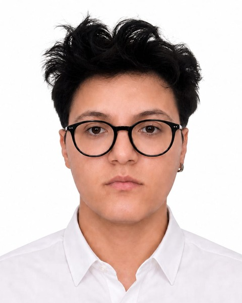

Merhaba, benHi, I'm
OSTİM Teknik Üniversitesi'nde Bilgisayar Mühendisliği 4. sınıf öğrencisiyim. Gerçek zamanlı simülasyon, gömülü programlama, görüntü işleme, oyun tasarımı ve geliştirme ile web geliştirme alanlarında projeler üretiyorum. I'm a senior Computer Engineering student at OSTİM Technical University, building projects in real-time simulation, embedded programming, computer vision, game design and development and web development.
HakkımdaAbout Me

OSTİM Teknik Üniversitesi Bilgisayar Mühendisliği 4. sınıf öğrencisiyim. Simülasyon, gerçek zamanlı sistemler, gömülü programlama, görüntü işleme, oyun geliştirme ve web geliştirme alanlarında çalışıyorum. Bu alanlarda 6 farklı firmada staj yaptım.
Stajlarımda Unreal Engine ile uçak ve kara araçları için gerçek zamanlı bir simülasyon ortamı geliştirdim, Raspberry Pi üzerinde YOLO tabanlı nesne tespiti modellerini eğitip uç cihazlar için optimize ettim ve bir mobil oyun ekibinde proje yöneticiliği üstlendim.
Yaklaşık iki yıldır Unity ve Unreal Engine ile, C# ve C++ kullanarak oyun geliştiriyorum. Oyun mekaniği, seviye tasarımı, düşman yapay zekâsı, ara sahneler ve kullanıcı arayüzü konularında deneyim kazandım. Hedefim, teknik ve yaratıcı yönümü bir arada geliştirerek gerçek zamanlı sistemler ve oyunlar alanında kendimi ileri taşımak.
I'm a senior Computer Engineering student at OSTİM Technical University, working in simulation, real-time systems, embedded programming, computer vision, game development and web development. I've completed internships at 6 different companies across these fields.
During my internships I developed a real-time simulation environment for aircraft and ground vehicles in Unreal Engine, trained YOLO-based object detection models and optimized them for edge devices on Raspberry Pi, and served as project manager on a mobile game team.
For about two years I've been developing games with Unity and Unreal Engine using C# and C++, gaining experience in game mechanics, level design, enemy AI, cutscenes and user interfaces. My goal is to grow both my technical and creative sides in real-time systems and games.
DeneyimExperience
Proje Yöneticisi ve Oyun Tasarımcısı StajyerProject Manager & Game Design Intern
UDO Games- 5 kişilik ekibin proje yöneticisi olarak 3 haftada bir mobil oyunun geliştirilmesini koordine ettim.
- Oyun tasarımcısı olarak konsepti ve mekanikleri belirledim; oyunu Unity ile oynanabilir sürüme taşıdık.
- As project manager of a 5-person team, coordinated the development of a mobile game in 3 weeks.
- As game designer, defined the concept and mechanics; we brought the game to a playable build in Unity.
Bilgisayarlı Görü StajyeriComputer Vision Intern
Mavinci · Ankara- Raspberry Pi üzerinde gerçek zamanlı nesne tespiti uygulamaları geliştirdim.
- Modelleri ONNX'e dönüştürüp TensorFlow Lite ve NCNN ile uç cihazlarda optimize ettim.
- YOLO tabanlı modeller eğittim; hiperparametre optimizasyonu ve performans analizi yaptım.
- CVAT ile veri etiketleyip özel veri setleri oluşturdum.
- Built real-time object detection applications on Raspberry Pi.
- Converted models to ONNX and optimized them for edge devices with TensorFlow Lite and NCNN.
- Trained YOLO-based models; performed hyperparameter optimization and performance analysis.
- Labeled data in CVAT and built custom datasets.
Simülasyon Geliştirme StajyeriSimulation Development Intern
Hypernova Simülasyon · Ankara- Unreal Engine ile uçak ve kara araçları için gerçekçi, gerçek zamanlı simülasyon ortamı geliştirdim.
- Sahne ve render performansını akıcı çalışacak şekilde optimize ettim.
- Uçuş ve sürüş senaryolarına uygun ortam ve arazi tasarımları yaptım.
- Developed a realistic, real-time simulation environment for aircraft and ground vehicles in Unreal Engine.
- Optimized scene and render performance for smooth real-time execution.
- Designed environments and terrain for flight and driving scenarios.
Frontend Geliştirme StajyeriFrontend Development Intern
Bilicisoft Bilişim ve Savunma · Ankara- Angular kullanarak web siteleri tasarladım ve geliştirdim.
- Designed and built websites using Angular.
Web Geliştirme StajyeriWeb Development Intern
Lord-E Eğitim Danışmanlık · Ankara- SEO eğitimi aldım ve bunu web sitesi tasarımı ve geliştirmede uyguladım.
- Trained in SEO and applied it to website design and development.
Yapay Zekâ StajyeriAI Intern
Anssoft · UzaktanRemote- Yapay zekâ eğitimi aldım ve yapay zekâ ajanları geliştirme üzerine çalıştım.
- Trained in AI and worked on developing AI agents.
Neler Kullanıyorum?What Do I Use?
Simülasyon ve Gerçek Zamanlı SistemlerSimulation and Real-Time Systems
Görüntü İşleme ve Gömülü Yapay ZekâComputer Vision and Embedded AI
Oyun ve Mobil GeliştirmeGame and Mobile Development
Web GeliştirmeWeb Development
Diller ve AraçlarLanguages and Tools
Birlikte Bir Şeyler YapalımLet's Build Something
Staj, iş birliği veya projeler hakkında benimle iletişime geçebilirsiniz.Feel free to reach out about internships, collaborations or projects.